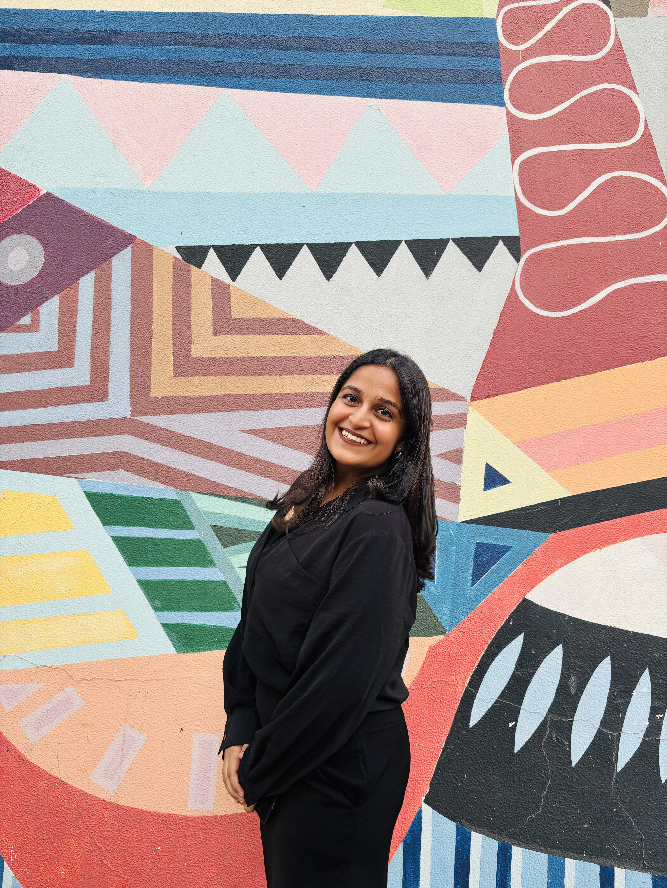

About Me
Welcome to my portfolio! I'm an aspiring designer pursuing my graduation in UX design at Sushant University, Gurugram. My creative thinking pushed my interest in design and my design skills help me enhance user experience. I'm currently working with softwares like Photoshop, Illustrator and Figma. I'm ambitious, perseverant and always willing to take up new challenges for my growth.
